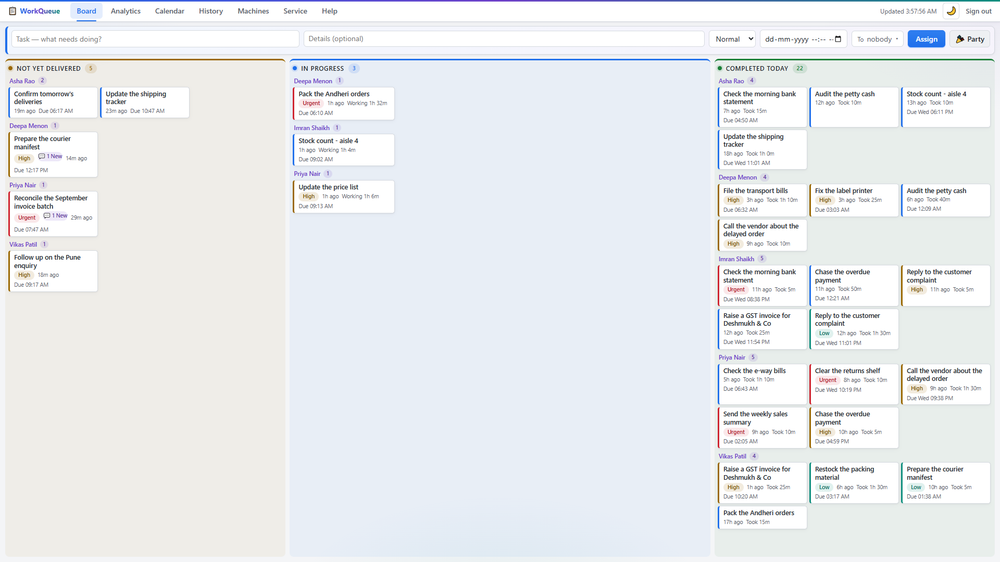
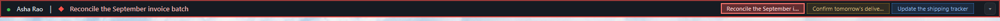
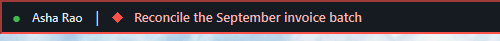
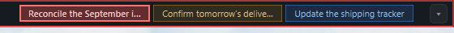
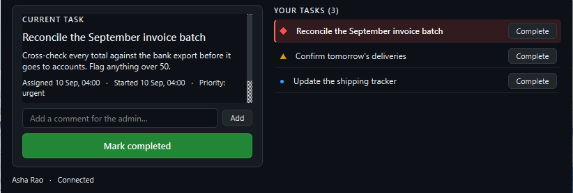
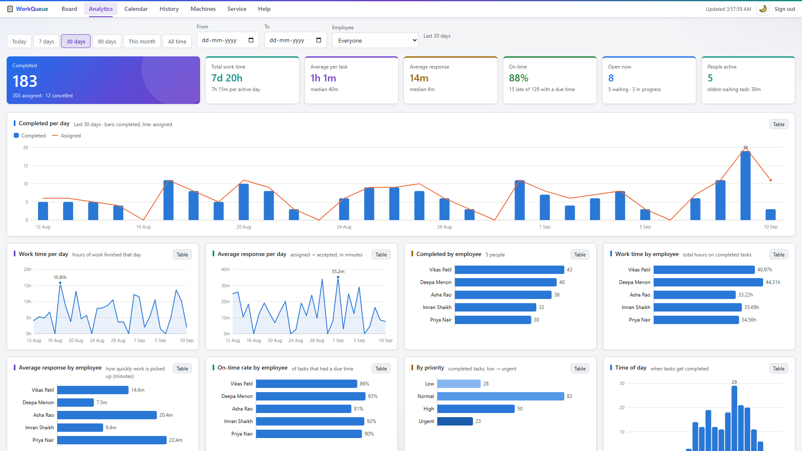
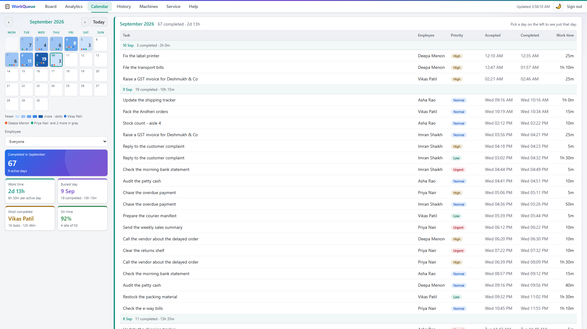

Give out work. Get the timings for free.
You assign a task from your browser. It lands within seconds on a thin strip at the top of that employee's screen. They press Complete when it is done. Those two moments are all WorkQueue needs to tell you how your day actually went.

34 pixels. That is the entire thing your staff have to learn.
The strip docks into Windows the same way the taskbar does, so Windows reserves the space for it and maximised windows simply stop below. It cannot cover anyone's work, and nothing can cover it.




There is no Accept button
A task is marked received the instant it reaches their machine. Nobody can forget to acknowledge work, and the gap between "assigned" and "on their screen" becomes a number you can actually manage.
One button to finish
Click a task to open the panel: the description, any comments, and one large Complete button that asks for a second click so it cannot happen by accident.
They can talk back
An employee can leave a comment on a task — a question, a blocker, a note on what they found. You see it and reply from the same task in the dashboard.
Assign in one line, then watch the day move
A title, any detail the person needs, a priority, a due date, who it goes to, and Assign. Send the same task to one person or to six.
- Three live columns — waiting, in progress, and completed today, grouped by person.
- Act without interrupting anyone — Done, Cancel, Reopen and Delete appear on a card when you point at it.
- Move work around — open a task and reassign it to somebody else.
- Urgent looks urgent — priority colours the card and the employee's strip frame.
The questions a manager actually asks
Seven headline numbers and ten charts, all driven by one filter row. Every chart has a table twin, so you can read the figures rather than squint at bars.
- How much got done — completed against assigned, per day.
- How long things take — average and median per task, and the longest jobs of the period.
- How fast work is picked up — response time per day and per person.
- Who is carrying what — count, hours, response and on-time rate per employee.
- When your team is busy — by hour of day and by day of week.

Every task keeps its own paper trail
Filter history by person and date range and you get response time and work time on every row, per-person totals at the bottom, and a CSV export that matches exactly what is on screen — the one your accountant or your client actually wants.
- Click any task title, anywhere, to open its full timeline.
- The calendar heat-shades the month so a slow week is visible at a glance.
- Reopen a finished task straight from its row if it comes back.

Built for an office, not for a demo.
Small offices have bad afternoons. The router reboots, the broadband dies, somebody switches off the wrong PC. Each of these was designed for rather than discovered.
- The network drops. Completions and comments go into a local outbox and are delivered when the server returns — each carrying the original click time, so a task finished at 10:35 during a three-hour outage is still recorded at 10:35, not at 13:35.
- Something gets sent twice. Every action carries a unique id the server recognises, so a retry after a dropped connection can never double-count a task.
- The server PC changes IP. The strip broadcasts on the local network and the server answers with its new address. If your router blocks broadcasts — common on mesh and ISP routers — it scans the network instead.
- Nothing works and nobody knows why. A built-in check walks through the eight usual causes — firewall, Wi-Fi isolation, VPN, wrong address — and tells you in plain words which one it is.
Two programs, one network, no cloud.
The whole system is a program on the manager's PC and a small program on each employee's. They talk to each other over the office network and nowhere else.
Away from the office?
WorkQueue can join a private network (Tailscale) so a laptop at home or a second branch reaches the same server, encrypted, with nothing published to the public internet. Setup is one extra step and it is included in the licence.
Backups are one file
Everything the system knows is a single database. The dashboard exports it while the server keeps running — either a full snapshot with a checksum, or a byte-exact copy of the database. Keep it off that PC and you are covered.
It can also throw a small party.
Send a card instead of a task — a birthday, a work anniversary, a win, a welcome. Balloons drift across that person's strip, and there is a one-minute game in the panel if they want it. A card never enters the history, the analytics or anyone's work time. It is not a task, and it takes itself down after a day.
We mention it because monitoring software has a reputation, and a tool your team resents is a tool that quietly stops being used.
What you need to run it
- Manager's PC
- Windows 10 or 11, left switched on during working hours. No dedicated server, no special hardware. Administrator rights are needed once, for the install.
- Employee PCs
- Windows 10 or 11. No administrator rights needed — the strip installs for the logged-in user.
- Network
- All the PCs on the same office network, wired or Wi-Fi. TCP port 8420 and UDP port 8421 open between them — the installer opens the firewall for you.
- Internet
- Not required. Only needed if you turn on remote access for people outside the office.
- Dashboard
- Any modern browser on any device on the network, including a phone or tablet.
- Install time
- About ten minutes for the server and under a minute per employee PC.
And what it does not do
We would rather you read this now than find out in month two.
- It is Windows only. Mac and Linux employee machines are not supported yet.
- People are identified by their PC, not by a login. That is the right trade for a trusted office network, but it does mean a determined person could pretend to be another machine.
- Work time is wall-clock time. If a task stays open over lunch, lunch is in the number. It measures elapsed time, not effort.
- Off the network, the queue goes stale. A laptop away from the office shows its last known tasks until it reconnects — unless you turn on remote access.
- The strip costs 34 pixels of height on the primary monitor, permanently.
About WorkQueue specifically
Is this employee monitoring? Will my team hate it?
It records two things per task: when it reached the screen and when the person pressed Complete. It does not take screenshots, log keystrokes, track idle time or watch which websites anyone visits, and it never will — that is a deliberate line, not an oversight.
In practice teams tend to like it, because "I sent you that hours ago" arguments stop being arguments. Everyone is looking at the same timestamps.
How many people can it handle?
It is built and load-tested for a single office — around 25 machines at once on ordinary hardware, with responses well under a tenth of a second. If you are bigger than that, talk to us before you buy rather than after.
What if the manager's PC dies?
Install the server on another PC and import your last export. This is why the backup is one file and why the dashboard nags you to keep a copy somewhere else. Employee PCs find the new server by themselves.
Can I get my data out?
Yes, at any time and without asking us. History exports to CSV, and the whole database exports as a JSON snapshot or as the SQLite file itself. There is no lock-in because there is nothing of yours on our side to lock.
Do you see any of our tasks?
No. The software never contacts us. There is no telemetry, no licence check-in and no analytics call. If your office had no internet at all, WorkQueue would not notice.
What does support look like?
Email, answered within one working day, by the person who wrote the software. The licence includes a year of it, along with a year of updates.
Put it on your own team for 30 days.
The complete tool, nothing held back, nothing to cancel. Tell us roughly how many PCs you have and we will send the installer and stay on the call while you set it up.